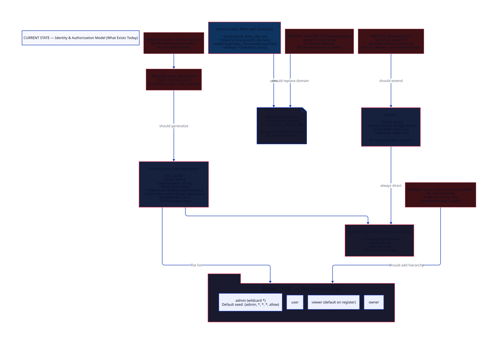
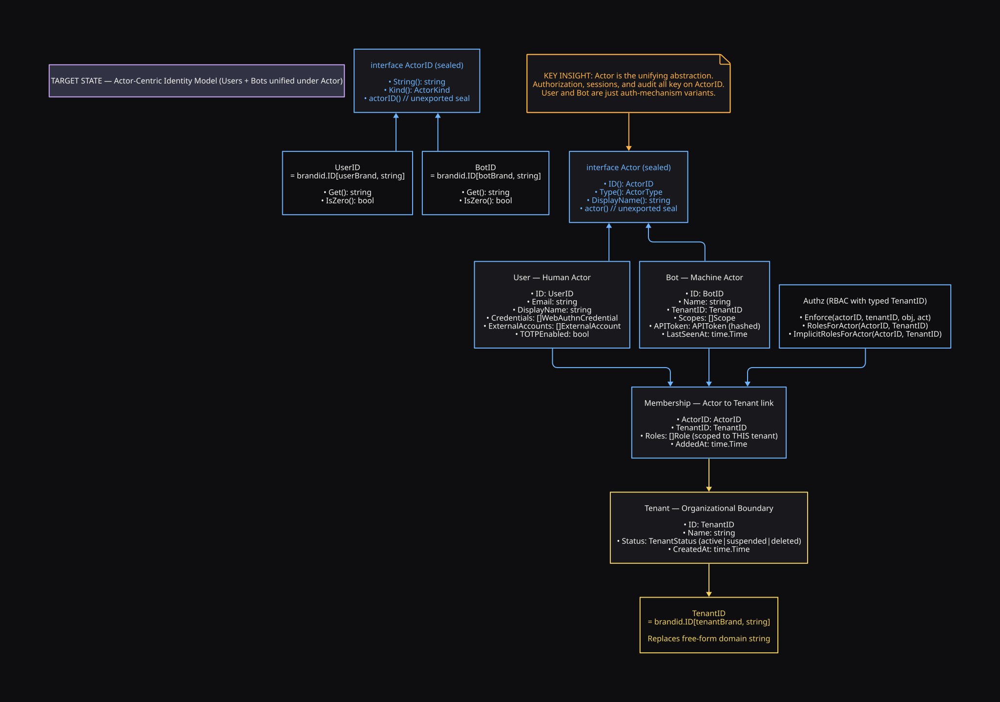
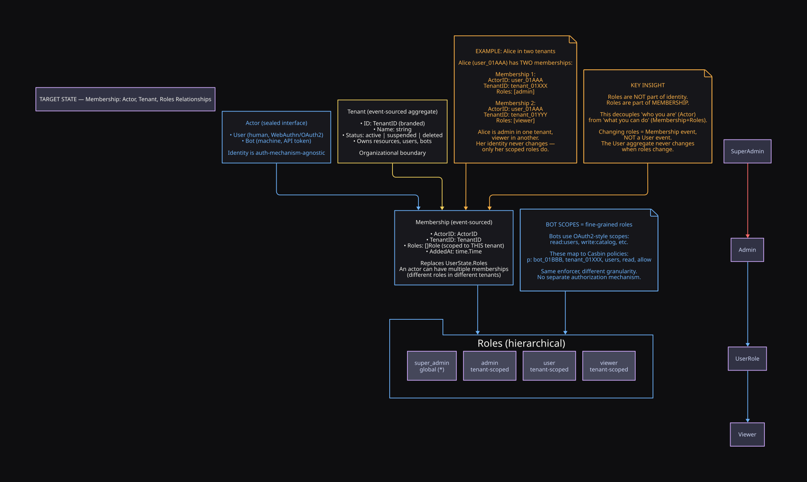
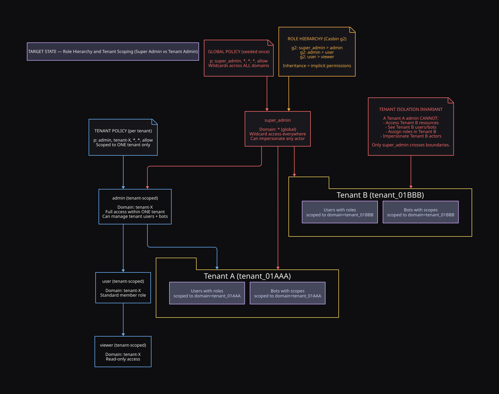
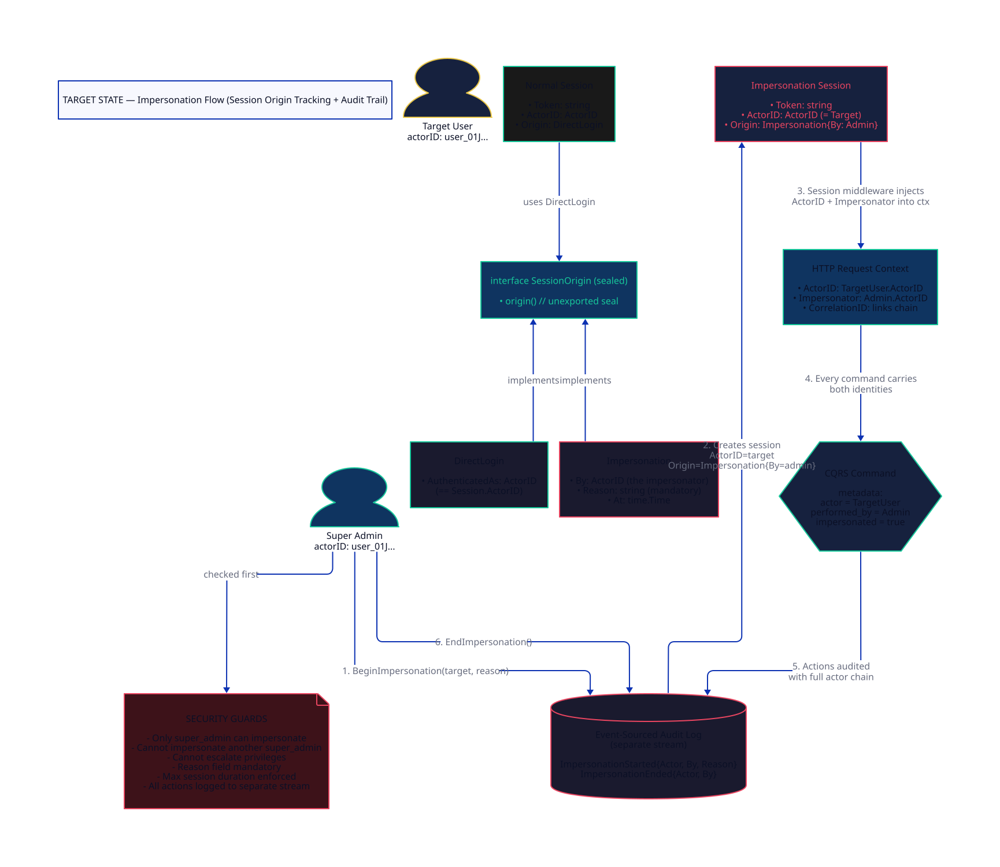
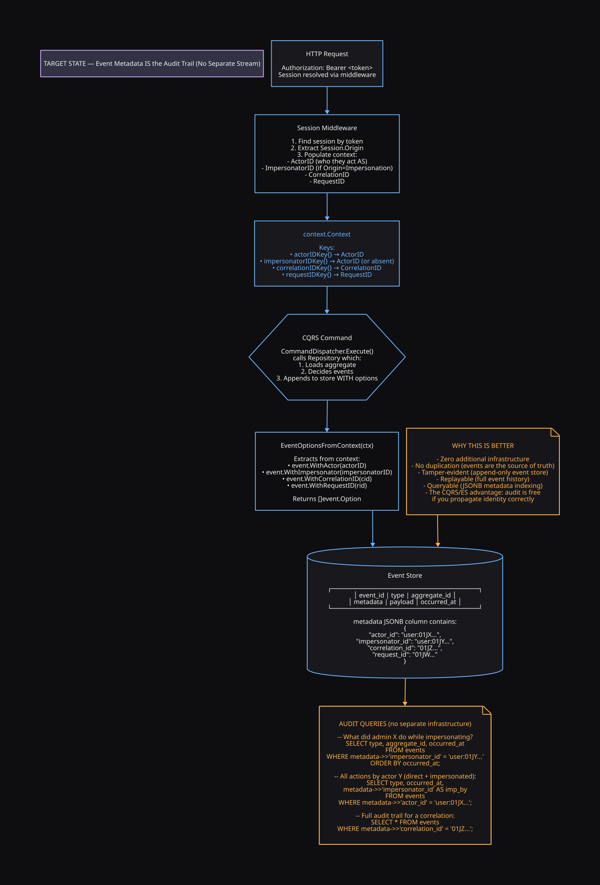

ActorID. Users and Bots are just auth-mechanism variants. Adding a new actor type (e.g., System) is O(1) — implement the interface.
Identity Model Redesign
Actor, Tenant, Impersonation
A first-principles redesign of the usermgmt identity and authorization model.
Three core ideas: Actor unifies Users and Bots under a sealed interface,
Tenant formalizes the existing domain string into a typed organizational
boundary with Membership-scoped roles, and Impersonation uses the event
store itself as the audit trail — no separate infrastructure.
01Executive Summary
The thesis in three sentences:
- Users and Bots are both Actors. Authorization, sessions, and audit should key on a sealed
ActorIDinterface — neverUserIDdirectly. This is the unifying abstraction. - The Casbin domain string is already half-baked multi-tenancy.
RolesUpdatedPayload.Domainexists but is untyped and underutilized. Formalize it:TenantIDbranded type,Tenantaggregate,Membershipentity carrying scoped roles. - The event store IS the audit trail. If every command produces events, and events carry
ActorID+ImpersonatorIDin metadata, then impersonation is fully auditable with zero additional infrastructure. This is the CQRS/ES advantage.
02Current State
The usermgmt module models identity as a single human-centric concept:
User. There is exactly one ID type (UserID), one aggregate
(User), and one role list (flat, no hierarchy). The Casbin authorization
model uses a free-form string domain parameter — but crucially, the system
already has a domain concept embedded in RolesUpdatedPayload.Domain
and the Casbin projection (es_casbin_projection.go:69-72 uses the user's
own ID as a domain fallback). This redesign formalizes what's already half there.
1
Actor Type (UserID only)
4
Flat Roles (no hierarchy)
7
Missing Concepts
0
Typed TenantID
0
Impersonation Support
1
Half-baked domain field

Existing multi-tenancy seed
The RolesUpdatedPayload struct already has a Domain string field
(es_events.go:18). The Casbin projection already handles domain-scoped
role assignments (es_casbin_projection.go:69-72). When domain is empty,
it falls back to the user's own ID — a hack. This redesign replaces that hack with a
typed TenantID and proper Membership entity.
03Problem Catalog
Critical
P1 — No Actor Abstraction: UserID Is the Only Identity
usermgmt/id.go:11, usermgmt/user.go:20-32, context.go:13
UserID is the sole identity type. Every authentication flow, session,
context key, and audit trail assumes a human. There is no way to represent a bot,
service account, or system identity. The User struct is human-centric
(Email, WebAuthn credentials, OAuth2) — machine authentication via API tokens is
structurally impossible without shoehorning a bot into human fields.
Fix
Introduce a sealed
Actor interface union. Both User and
Bot implement it. Authorization, sessions, and audit key on
ActorID — never UserID directly.
Critical
P2 — No TenantID: Casbin Domain Is a Raw String
usermgmt/authz_types.go:45-59, es_events.go:18, es_casbin_projection.go:69-72
The Casbin RBAC-with-domains model accepts a domain parameter as a
free-form string. The RolesUpdatedPayload.Domain field exists
but is untyped. The Casbin projection falls back to using the user's own ID as domain
when it's empty — a hack that accidentally creates per-user silos instead of real
tenant boundaries. No TenantID branded type, no Tenant
aggregate, no tenant lifecycle.
Fix
Introduce
TenantID = brandid.ID[tenantBrand, string] and a
Tenant aggregate with its own event stream. Replace all string domain
parameters with typed TenantID. Introduce a Membership
entity linking ActorID → TenantID with scoped roles.
Critical
P3 — No Role Hierarchy: Single Flat Admin
usermgmt/authz_types.go:34-43, usermgmt/authz_roles.go:74-78
Four roles exist (admin, user, viewer,
owner) with zero inheritance. The default policy seeds a single wildcard:
{admin, *, *, *, allow}. There is no distinction between "super admin"
(global) and "tenant admin" (scoped). A flat admin either has access to
everything or nothing — no middle ground.
Fix
Add
RoleSuperAdmin with a Casbin g2 role hierarchy:
super_admin > admin > user > viewer. Seed global policy for
super_admin (domain *) and tenant-scoped policy for
admin (domain = tenantID).
Critical
P4 — No Impersonation: Sessions Lack Origin Tracking
usermgmt/user.go:96-101, usermgmt/store.go:13-18, usermgmt/middleware.go:39-59
Session carries only Token, UserID, and
timestamps. There is no field recording "who created this session on behalf of whom."
An admin cannot act as another user for support/debugging. No audit trail of the
actor chain. There is no ImpersonatedBy or Origin field.
Fix
Replace
Session.UserID with Session.ActorID and add a
sealed SessionOrigin union: DirectLogin{AuthenticatedAs}
vs Impersonation{By, Reason, At}. No separate audit stream
— the event store IS the audit trail via propagated metadata.
High
P5 — Roles Live on User Instead of Membership
usermgmt/user.go:24, usermgmt/es_state.go:15, es_events.go:15-19
UserState.Roles is a flat []Role on the User aggregate.
The RolesUpdated event carries a Domain field, but the
domain-to-roles mapping is implicit. This means a user's roles are coupled to their
identity rather than to their tenant membership. Moving a user between tenants is
impossible without destroying and recreating role assignments.
Fix
Move roles to a
Membership entity:
{ActorID, TenantID, Roles}. A user can have different roles in
different tenants. Role changes emit MembershipRolesChanged events.
High
P6 — No Bot Authentication: API Tokens Don't Exist
usermgmt/middleware.go:76-85 (extractToken — session/cookie only)
The extractToken function handles session cookies and Bearer tokens,
but all tokens resolve to a UserID via SessionStore.Find().
There is no APIToken type, no token-to-bot lookup, and no scope-based
authorization.
Fix
Add
Bot aggregate with TokenMAC (HMAC-SHA256 + pepper, never
plaintext). Middleware checks both session store and API token store. Bot scopes map
to fine-grained Casbin policies — same enforcer, different granularity.
High
P7 — Event Metadata Lacks Actor Chain
context.go:134-165 (EventOptionsFromContext)
EventOptionsFromContext propagates UserID,
CorrelationID, and RequestID into event metadata. But there
is no PerformedBy or ImpersonatorID. When an admin
impersonates a user and triggers a command, the event would record only the target —
the admin is invisible.
Fix
Extend
EventOptionsFromContext to propagate ActorID
(effective) and ImpersonatorID (real actor, if impersonating). Every
event becomes self-auditing.
04Design Principles
+
Actor is the unifying abstraction
Authorization, sessions, audit trails, and context propagation all key on
+
Roles are Membership, not Identity
An actor's roles are scoped to their tenant membership — not embedded in their identity. Users can have different roles in different tenants. Role changes don't touch the User aggregate.
+
The event store IS the audit trail
No separate audit stream. Every command produces events. Every event carries
ActorID + ImpersonatorID in metadata. Query the event store for any audit question. This is the CQRS/ES advantage — audit is free if you propagate identity correctly.
+
Formalize what already exists
The system already has a
Domain field in RolesUpdatedPayload. It already has Casbin RBAC-with-domains. This redesign doesn't add multi-tenancy from scratch — it makes the existing half-baked concept typed, safe, and complete.
+
Impossible states are unrepresentable
Sealed interfaces prevent constructing an
Actor that isn't a User or Bot. SessionOrigin union prevents a session that claims to be impersonating without recording who impersonated. Type switches are exhaustive at compile time.
05Actor Model — Sealed Union
The core insight: "Bot and Users are both Actors." An Actor is anything
that can authenticate, be authorized, hold a session, and be audited. We model this as
a sealed interface — only types in the usermgmt package can implement it.

Before — Single flat type
After — Sealed Actor union
// id.go — the ONLY identity type
type UserID = brandid.ID[userBrand, string]
// No Bot, no System, no API token auth
// Everything keys on UserID// Sealed ActorID — both User and Bot satisfy it
type ActorID interface {
String() string
Kind() ActorKind
actorID() // unexported seal
}
type UserID = brandid.ID[userBrand, string]
type BotID = brandid.ID[botBrand, string]
// Both implement ActorID via .String() + .Kind()
func (UserID) actorID() {}
func (BotID) actorID() {}Full Actor Type Definitions
// ActorKind discriminates actor variants for type switches
type ActorKind int
const (
ActorKindUser ActorKind = iota
ActorKindBot
)
// Actor is the sealed union of all identity types.
type Actor interface {
ID() ActorID
Type() ActorKind
DisplayName() string
actor() // unexported — seals the union
}
// User — Human Actor (existing type, updated)
type User struct {
ID UserID
Email string
DisplayName string
Credentials []WebAuthnCredential
ExternalAccounts []ExternalAccount
EmailVerified bool
TOTPEnabled bool
// NOTE: Roles REMOVED — moved to Membership
}
func (u *User) ID() ActorID { return u.ID }
func (u *User) Type() ActorKind { return ActorKindUser }
func (u *User) DisplayName() string { return u.DisplayName }
func (u *User) actor() {}
// Bot — Machine Actor (NEW aggregate)
type Bot struct {
ID BotID
Name string
TenantID TenantID // bots are always tenant-scoped
Scopes []Scope // e.g. "read:users", "write:catalog"
TokenMAC []byte // HMAC-SHA256(pepper, token)
LastSeenAt time.Time
CreatedAt time.Time
RevokedAt *time.Time // nil = active
}
func (b *Bot) ID() ActorID { return b.ID }
func (b *Bot) Type() ActorKind { return ActorKindBot }
func (b *Bot) DisplayName() string { return b.Name }
func (b *Bot) actor() {}Bot Scopes = Fine-Grained Roles
Bots use OAuth2-style scopes (read:users, write:catalog).
These are NOT a separate authorization mechanism — they map to fine-grained Casbin
policies: p: bot_X, tenant_Y, users, read, allow. Same enforcer,
different granularity. No separate authz path for bots.
06Tenant & Membership
A Tenant is an organizational boundary. It replaces the free-form
domain string with a branded TenantID. A
Membership links an Actor to a Tenant with
scoped roles — decoupling "who you are" from "what you can do."

Tenant Aggregate (Event-Sourced)
type TenantID = brandid.ID[tenantBrand, string]
type TenantStatus int
const (
TenantActive TenantStatus = iota
TenantSuspended
TenantDeleted
)
type TenantState struct {
Name string
Status TenantStatus
CreatedAt time.Time
}
// Membership — Actor to Tenant link with scoped roles
type Membership struct {
ActorID ActorID
TenantID TenantID
Roles []Role // scoped to THIS tenant only
}Membership replaces UserState.Roles
Currently UserState.Roles is a flat list on the User aggregate. In the
new model, roles move to Membership. A user with admin in
Tenant A and viewer in Tenant B has two Membership entities — the User
aggregate knows nothing about roles. Changing roles is a Membership event, not a User
event.
Tenant Lifecycle Cascade
When a tenant is suspended (TenantSuspended event), the projection layer
reacts: all sessions for actors in that tenant are revoked, new logins are rejected,
and API tokens are invalidated. This is natural in event sourcing — the projection
subscribes to tenant events and cascades the effects.
07Role Hierarchy — Super vs Tenant Admin
The flat role list gains a Casbin g2 hierarchy.
Super Admin inherits from admin (which inherits from
user, which inherits from viewer). The key distinction:
Super Admin's policy is seeded in domain * (global), while Tenant Admin's
policy is scoped to a specific TenantID.

Updated Role Constants and Casbin Model
const (
RoleSuperAdmin Role = "super_admin" // global wildcard
RoleAdmin Role = "admin" // tenant-scoped wildcard
RoleUser Role = "user" // standard member
RoleViewer Role = "viewer" // read-only
RoleOwner Role = "owner" // resource ownership
)
// Seed policies
func defaultPolicies() []Policy {
return []Policy{
{RoleSuperAdmin, "*", "*", ActionAll, EffectAllow},
}
}
// Role hierarchy seed (applied on NewAuthz)
func defaultRoleHierarchy() []RoleLink {
return []RoleLink{
{RoleSuperAdmin, RoleAdmin}, // super_admin inherits admin
{RoleAdmin, RoleUser}, // admin inherits user
{RoleUser, RoleViewer}, // user inherits viewer
}
}| Role | Scope | Can Impersonate? | Crosses Tenant Boundaries? |
|---|---|---|---|
| super_admin | Global (*) | Yes | Yes |
| admin | One tenant | No | No |
| user | One tenant | No | No |
| viewer | One tenant | No | No |
08Impersonation — Act on Behalf Of
Impersonation allows a Super Admin to create a session that acts as another actor (User or Bot) for support, debugging, or testing. The session records both the effective actor (who they're acting as) and the impersonator (who they really are). Every action taken during impersonation carries the full actor chain in event metadata.

Session with Sealed Origin
// SessionOrigin — sealed union for login provenance
type SessionOrigin interface {
origin() // unexported seal
}
// DirectLogin — normal authentication (user logged in themselves)
type DirectLogin struct {
AuthenticatedAs ActorID // == Session.ActorID
}
func (DirectLogin) origin() {}
// Impersonation — admin is acting as another actor
type Impersonation struct {
By ActorID // the real admin
Reason string // mandatory audit field
At time.Time
}
func (Impersonation) origin() {}
// Session — now carries ActorID + Origin
type Session struct {
Token string
ActorID ActorID // who the session acts AS
Origin SessionOrigin // how this session came to be
CreatedAt time.Time
ExpiresAt time.Time
}
// Impersonator returns the real actor, or nil if direct login.
func (s *Session) Impersonator() (ActorID, bool) {
if imp, ok := s.Origin.(Impersonation); ok {
return imp.By, true
}
return nil, false
}Security Guards (Non-Negotiable)
- Only
super_admincan initiate impersonation - Cannot impersonate another
super_admin(no privilege escalation) Reasonfield is mandatory — empty reason = rejection at command level- Max impersonation session duration enforced (e.g., 1 hour)
- Impersonation session is tied to the admin's own session — if admin's session expires, impersonation ends
09Event Store IS the Audit Trail
No separate audit stream needed. The system is fully event-sourced —
every state change is an event. Events already carry metadata (UserID,
CorrelationID, RequestID). Extending metadata with
ActorID + ImpersonatorID makes every event self-auditing.
This is the CQRS/ES advantage: audit is free if you propagate identity correctly.

Why this is better than a separate audit stream
- Zero additional infrastructure — no separate stream, no extra events, no extra tables
- No duplication — events are the source of truth, audit is a query on them
- Tamper-evident — append-only event store, immutable history
- Replayable — full event history can be replayed for forensic analysis
- Queryable — JSONB metadata column supports indexed queries
Audit Queries
-- What did admin X do while impersonating?
SELECT type, aggregate_id, occurred_at, payload
FROM events
WHERE metadata->>'impersonator_id' = 'user:01JY...'
ORDER BY occurred_at;
-- All actions by actor Y (both direct and impersonated):
SELECT type, occurred_at,
metadata->>'impersonator_id' AS performed_by
FROM events
WHERE metadata->>'actor_id' = 'user:01JX...';
-- Full audit trail for a single request correlation:
SELECT * FROM events
WHERE metadata->>'correlation_id' = '01JZ...';10Cryptography — HMAC + Pepper
Bot API tokens are 256-bit random secrets. Brute-forcing the preimage is infeasible regardless of hash speed. The real threat is defense in depth on database compromise: if the DB leaks, can an attacker verify a token they later capture from logs, network traffic, or a MITM?
| Approach | DB leak alone | DB + captured token | Per-request cost | New dep? |
|---|---|---|---|---|
| Plain SHA-256 | Safe (can't reverse) | Compromisable | ~0 | No |
| HMAC-SHA256 + pepper | Useless (no key) | Useless (no key) | ~0 | No (stdlib) |
| Argon2id | Useless | Useless | 10-100ms | Yes |
Recommendation: HMAC-SHA256 with a server-side pepper. Same speed as
SHA-256, no new dependency (crypto/hmac + crypto/sha256 are stdlib),
and DB-only leaks are useless without the pepper key.
What Is a Pepper?
A pepper is a secret cryptographic key added to a hash, stored separately from the database. Unlike a salt (which is unique per item and stored alongside the hash), a pepper is one shared server secret that never touches the DB.
| Salt | Pepper | |
|---|---|---|
| Unique per item? | Yes | No (one shared secret) |
| Stored where? | Next to hash (in DB) | Outside DB (env, KMS, HSM) |
| In a DB leak? | Exposed | Not exposed |
| Purpose | Prevents rainbow tables | Prevents offline cracking on DB leak |
Implementation
// pepper loaded from env/KMS — never in DB, never in logs
var pepper = []byte(os.Getenv("BOT_TOKEN_PEPPER")) // 32+ random bytes
// At creation: store the MAC, throw away the plaintext token
func HashToken(token string) []byte {
mac := hmac.New(sha256.New, pepper)
mac.Write([]byte(token))
return mac.Sum(nil) // store this in Bot.TokenMAC
}
// At verification: recompute and constant-time compare
func VerifyToken(token string, storedMAC []byte) bool {
mac := hmac.New(sha256.New, pepper)
mac.Write([]byte(token))
return hmac.Equal(mac.Sum(nil), storedMAC)
}Related issue: Session tokens stored in plaintext
The existing Session.Token (user.go:97) is stored in
plaintext in the session store, verified via
subtle.ConstantTimeCompare (user.go:126). A DB leak of the
session store = immediate account takeover for all active sessions. This is actually
weaker than even plain SHA-256. Worth fixing alongside the bot token work — but the
tradeoff is that hashed session tokens need a lookup index (can't find a session by
token without either a prefix index or a full scan).
11Events & Commands
New aggregates (Tenant, Bot, Membership) each get their own event streams. The User
aggregate loses Roles (moved to Membership) but keeps identity and
credential events. No impersonation events — the event store IS the
audit trail via metadata.
Tenant Aggregate
Events: TenantCreated, TenantRenamed, TenantSuspended, TenantReactivated, TenantDeleted
Commands: CreateTenant, RenameTenant, SuspendTenant, ReactivateTenant, DeleteTenant
Bot Aggregate
Events: BotCreated, BotRenamed, BotScopesChanged, BotRevoked, BotDeleted
Commands: CreateBot, RenameBot, UpdateBotScopes, RevokeBot, DeleteBot
Membership Aggregate
Events: MemberAdded, MemberRolesChanged, MemberRemoved
Commands: AddMember, UpdateMemberRoles, RemoveMember
No Impersonation Events
Impersonation is tracked via event metadata, not separate events.
Every command dispatched during impersonation carries
impersonator_id in its metadata. The audit trail is the event store.
12Context Propagation
The root context.go gains ActorID and
ImpersonatorID context keys. EventOptionsFromContext
propagates the full actor chain into event metadata — this is the mechanism that makes
the event store a complete audit trail.
Before — UserID only
After — ActorID + Impersonator
func EventOptionsFromContext(ctx) []Option {
if uid := UserIDFromContext(ctx); !uid.IsZero() {
opts = append(opts, WithUserID(uid))
}
// No impersonator tracking
// No actor kind
}func EventOptionsFromContext(ctx) []Option {
if aid := ActorFromContext(ctx); aid != nil {
opts = append(opts, WithActorID(aid))
}
if imp := ImpersonatorFromContext(ctx); imp != nil {
opts = append(opts, WithImpersonator(imp))
}
// Full actor chain in every event
}13Decision Log
D1: Sealed interface union over string discriminator
Chose: ActorID as a sealed Go interface.
Rejected: Single type with Kind field. Reason: runtime
discrimination is error-prone. The sealed interface forces exhaustive type switches
and prevents constructing an invalid kind.
D2: Roles on Membership, not on User
Chose: Move Roles to Membership.
Rejected: Keep roles on User with per-tenant fields. Reason: a user's
identity should not change when their role changes. Coupling roles to identity means
tenant transfers require User aggregate mutations.
D3: SessionOrigin sealed union over boolean field
Chose: SessionOrigin sealed interface.
Rejected: Boolean IsImpersonated + optional
ImpersonatorID. Reason: a bool + optional pointer can represent
IsImpersonated=true, ImpersonatorID=nil — an impossible state the type
system should prevent.
D4: Event metadata over separate audit stream
Chose: Propagate ActorID + ImpersonatorID
via EventOptionsFromContext into event metadata.
Rejected: Separate ImpersonationStarted/Ended
events on a dedicated audit stream. Reason: the event store IS the audit trail.
Every command already produces events. Adding a separate stream is redundant
duplication. Audit = query the event store by metadata.
D5: HMAC-SHA256 + pepper over plain SHA-256
Chose: HMAC-SHA256 with server-side pepper for bot API tokens.
Rejected: Plain SHA-256 (vulnerable to DB-leak + token-capture
attacks) and Argon2id (10-100ms per request for high-entropy tokens where brute force
is already infeasible). HMAC + pepper gives DB-leak defense at ~0 cost per request.
D6: Bot scopes as Casbin policies, not separate mechanism
Chose: Bot scopes (read:users) map to fine-grained
Casbin policies.
Rejected: Separate OAuth2-style scope checker alongside RBAC.
Reason: two authorization mechanisms is a split brain. Casbin already supports
arbitrary object/action pairs. Scopes are just fine-grained roles.
14Anti-Patterns to Avoid
Trap
Separate audit stream for impersonation
Do NOT create ImpersonationStarted/Ended events on a separate
stream. The event store IS the audit trail. Every command already produces events —
just propagate ActorID + ImpersonatorID in metadata. A
separate stream is redundant duplication that will drift out of sync.
Trap
Storing API tokens with plain SHA-256
Do NOT use plain sha256.Sum(token) for bot API tokens. If the DB leaks,
an attacker who later captures a token from logs/network can verify it against the
leaked hashes. Use HMAC-SHA256(pepper, token) — the pepper prevents
verification without the server-side key.
Trap
Embedding User into Bot for code reuse
Do NOT embed User into Bot to reuse fields. Bots don't have
emails. Embedding creates a false "is-a" relationship and promotes fields that don't
belong. Use composition via the Actor interface.
Trap
ActorID.String() without kind prefix
Do NOT pass ActorID.String() as a Casbin subject without encoding the
actor kind. If user_01J... and bot_01J... produce the same
string, policies are ambiguous. The encoding MUST include kind:
"user:01J..." or "bot:01J...".
Trap
Pepper in the database
If the pepper is in the DB, it's not a pepper — it's a global salt. The pepper MUST live outside the DB: environment variable (dev), KMS/HSM/Vault (production). A DB leak that includes the pepper is no better than plaintext.
Trap
Impersonation without mandatory reason
Every impersonation session MUST have a non-empty Reason. This is the
audit justification. An empty reason is a rejection at command-validation level, not
a warning. Without this, impersonation becomes an unaudited backdoor.
Watch out
Default tenant on registration
When a user registers without a tenant context, decide explicitly: personal tenant
(like GitHub), shared default tenant, or no tenant (unassigned until invited)?
This is a product decision. Document it and enforce it in RegisterUserCmd.
15Migration Roadmap
This is a foundational data-model change — a v2 to v3 migration. It must be incremental: each step compiles, passes tests, and ships independently.
1
Add branded types: ActorID, BotID, TenantID
Add new branded types alongside existing UserID. Sealed
Actor/ActorID interfaces. No behavior change — just type
definitions. Existing code continues using UserID.
2
Introduce Tenant aggregate and Membership entity
New event-sourced Tenant aggregate with its own commands/events. Membership entity links ActorID to TenantID. CasbinProjection gains Membership event handling.
3
Migrate roles from User to Membership
Move UserState.Roles to Membership.Roles. Existing
RolesUpdated events become MemberRolesChanged. Migration
projection replays old User events into Membership events. User aggregate loses
Roles.
4
Add role hierarchy (g2) to Casbin model
Update defaultModel with g2 inheritance. Seed
super_admin > admin > user > viewer. Update
defaultPolicies.
5
Add SessionOrigin sealed union
Extend Session with Origin field. Existing sessions get
DirectLogin{AuthenticatedAs: UserID} as default origin.
6
Implement impersonation Service methods
Add Service.BeginImpersonation(actorID, reason) and
Service.EndImpersonation(token). Wire security guards. No separate
audit events — just context propagation.
7
Add Bot aggregate + HMAC-SHA256 API token auth
New event-sourced Bot aggregate. API token auth via HMAC-SHA256 + pepper. Update session middleware to check both session store and API token store.
8
Update context propagation + EventOptionsFromContext
Add WithActor/ActorFromContext and
WithImpersonator/ImpersonatorFromContext. Extend
EventOptionsFromContext to propagate the full actor chain.
9
Generalize Authz to use ActorID + TenantID
Update Authz.Enforce to accept ActorID and
TenantID. Update CasbinProjection to derive policies from
Membership events. Bridge old callers via adapter functions.
16Open Questions
These are product decisions that need answers before implementation. They are not technical blockers — they are business requirements that shape the design.
Q1: Personal tenant on registration?
When a user registers without a tenant invitation, do they get:
(a) a personal tenant (like GitHub personal accounts),
(b) a shared default tenant, or
(c) no tenant (unassigned until invited)?
This affects the RegisterUserCmd validation and the UX of the
registration flow.
Q2: System/Internal actors?
Cron jobs, background workers, and internal services aren't Users or Bots. Should
there be a SystemActor variant? For now, system services can
authenticate as Bots with tenant-scoped tokens. The sealed interface makes adding
SystemActor O(1) if needed later.
Q3: Tenant deletion = hard or soft?
TenantDeleted is a tombstone event (matching UserDeleted).
But what happens to the tenant's users and bots? Are they orphaned? Moved to a
default tenant? This is a product decision about data retention.
Q4: Session token hashing tradeoff
The existing Session.Token is stored in plaintext. Hashing it requires
either a prefix-based lookup index or a full scan. Accept the risk (short-lived
sessions in Redis with TTL) or pay the indexing cost? Separate from this redesign
but related.